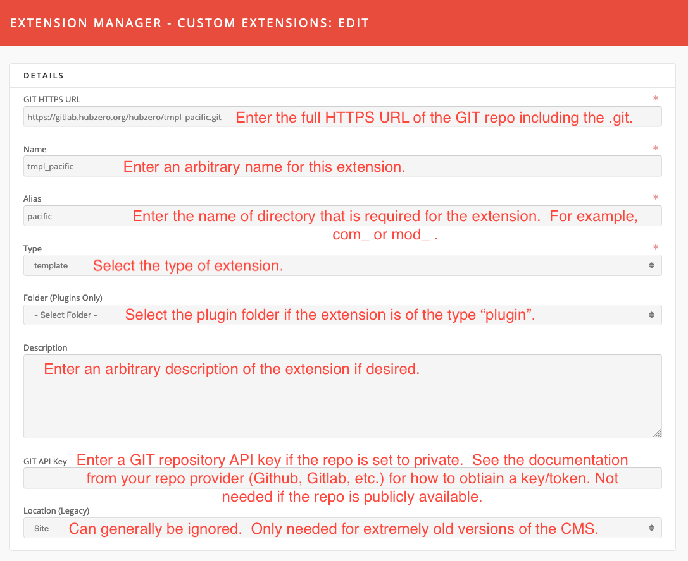
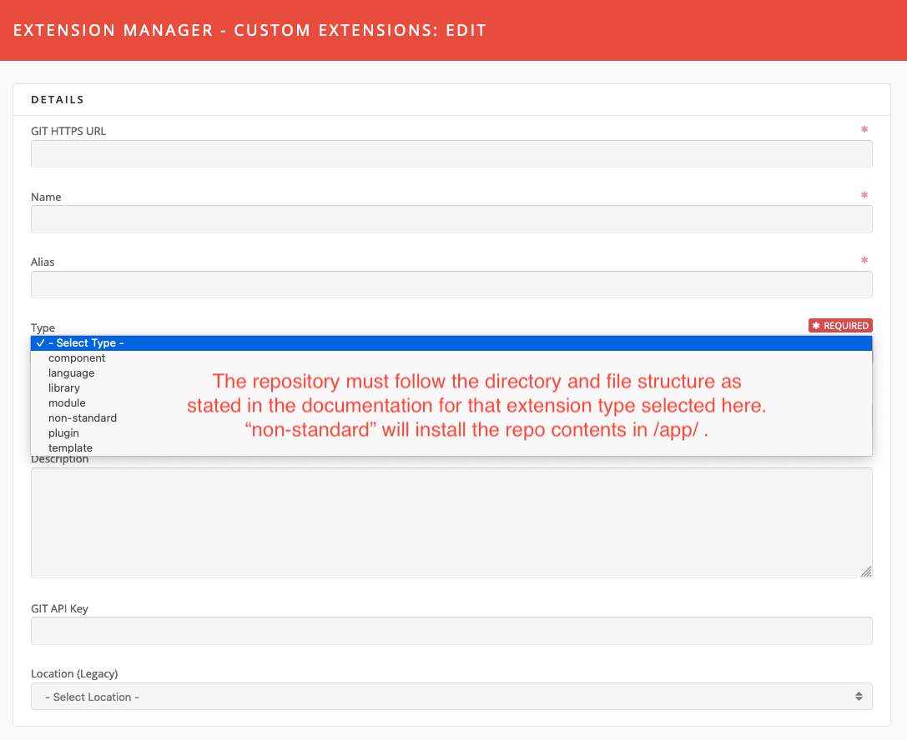
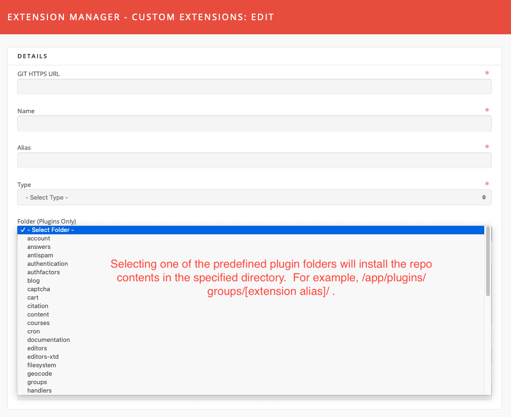
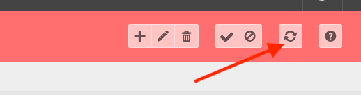
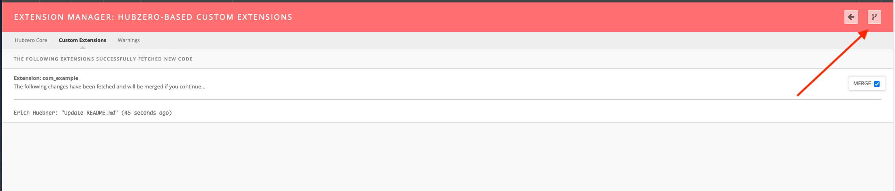
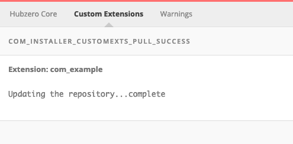

Hub managers
Extension Manager
The Extension Manager lists every installed extension — components, modules, plugins, templates, languages and libraries — and enables or disables them. It also installs a hub's own extensions from a git repository, and reports problems with the server's PHP configuration.
Select Extensions → Extension Manager, or go to
/administrator/index.php?option=com_installer.
The screen has three tabs:
| Tab | Controller | What it holds |
|---|---|---|
| Hubzero Core | manage |
Every extension shipped with the platform |
| Custom Extensions | customexts |
Extensions this hub installed from git |
| Warnings | warnings |
Checks on the server's PHP settings |
Hubzero Core
This tab lists the platform's own extensions. They can be disabled and
re-enabled, but never installed or removed from here — they come and go with
the codebase. A core extension can be overridden by putting a replacement of
the same name under app/.
Columns: Name, Location (Site or Administrator), Status, Type, Version, Date, Author, Folder (plugins only) and ID. The Name, Location, Status, Type, Folder and ID columns sort.
Filters: a search box and drop-downs for location, status (Enabled / Disabled / Protected), type and folder.
Toolbar
| Button | Effect |
|---|---|
| Enable / Disable | Changes the state of the selected extensions. |
| Refresh Cache | Re-reads the selected extensions' XML manifests. Useful after editing one. |
| Options | Component settings and permissions. |
| Help | Opens the built-in help screen. |
There is no Uninstall button; it is commented out in the view. Names in this list are not links — there is nothing to edit. Extensions marked protected are highlighted but can still be disabled; the only thing the component refuses to disable is the default template.
To enable or disable a core extension:
- Go to Extensions → Extension Manager.
- Stay on Hubzero Core, and find the extension with the search box or the Type filter.
- Tick it and select Enable or Disable.
Core Migrations
A second navigation strip inside this tab leads to Core Migrations, which lists the platform's database migration files and their status. Its toolbar offers Run pending migrations, and, per selected file, Force run UP on selected migrations and Force run DOWN on selected migrations.
Custom Extensions
A custom extension is code this hub adds to app/, installed and updated by
cloning a git repository. The repository must lay its files out the way the
platform expects for the chosen extension type; the non-standard type drops
the repository's contents into app/ as they are.
Columns: Name, Status, Location, Type, Folder, Modified on, Modified by and ID.
Toolbar
| Button | Effect |
|---|---|
| New | Opens an empty extension record. |
| Edit | Opens the selected record. |
| Delete | Removes the record, after a confirmation. |
| Enable / Disable | Changes the state of the selected extensions. |
| Update Selected Custom Extensions | Fetches from git and offers to merge. |
| Help | Opens the built-in help screen. |
The form
| Field | Notes |
|---|---|
| GIT HTTPS URL | Required. The full HTTPS clone URL, ending in .git. |
| Name | Required. A title for the extension. |
| Alias | Required. The directory name to create, including any com_ or mod_ prefix. |
| Type | Required. One of component, language, library, module, plugin, template, non-standard. |
| Folder (Plugins Only) | The plugin group to install into, for plugin extensions. |
| Description | Free text. |
| GIT Personal Access Token | Needed only for a private repository. |
| GIT Branch | The branch to install, in the form origin/main. Blank uses the repository's default branch. |
| Location (Legacy) | Site or Administrator. Only relevant to very old extensions. |
To add one:
- Go to Extensions → Extension Manager → Custom Extensions.
- Select New.
- Fill in the form.
- Select Save & Close.
Editing works the same way: tick the row, select Edit, change the form, Save & Close. Enabling and disabling work as they do on the Hubzero Core tab.



Installing and updating the code
Saving a record does not fetch anything. The code is pulled by the update button.
-
Tick the extension on the Custom Extensions tab.
-
Select Update Selected Custom Extensions.

-
Hubzero clones the repository if it has not been cloned, or fetches it if it has, and lists the incoming commits. Select Merge Code to apply them.

-
A confirmation screen reports what was merged.

Warnings
This tab runs a set of checks against the PHP configuration and lists anything it does not like, each as an expandable panel. It checks that:
- file uploads are enabled;
upload_tmp_diris set and writable;- the hub's temporary path is set and writable;
memory_limitis at least 16 MB;post_max_sizeis not smaller thanupload_max_filesize;post_max_sizeandupload_max_filesizeare each at least 4 MB;- the Imagick extension is loaded;
/usr/bin/unzipexists.
If nothing is wrong the tab says so.
Options
Options holds a cache timeout for the extension list and the name of the system user that runs git operations, plus a permissions tab. See the generated reference.
Composer packages
The component also carries two screens for installing PHP packages with
Composer — a package list and a repository list. Neither is linked from the
Extension Manager's navigation, and both need an app/composer.json before
they will do anything. They are also incomplete: their language strings are
missing, so they render raw keys such as COM_INSTALLER_TITLE_PACKAGES
instead of labels. Treat them as unfinished.
Rewritten and checked against 2.4-main @ 123ea53b14 on 2026-09-09.